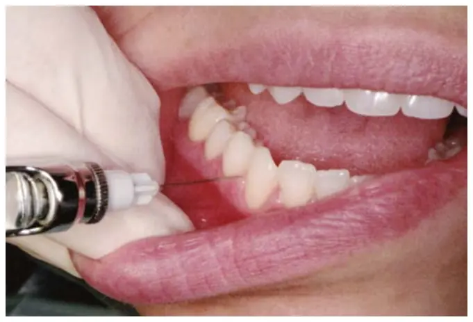

نسخه استخراجشده؛ ترجمه یا تأیید علمی انجام نشده است. وضعیت: captured
بیماری برای ترمیم شش دندان قدامی پایین، از کانین تا کانین، آمده است. همکارت پیشنهاد میکند برای راحتی کار در هر دو طرف بلاک عصب آلوئولار تحتانی (IANB) بزنی. پیش از قبول، به عارضههای این کار فکر کن.
IANB دوطرفه جز برای جراحی دوطرفهی فک پایین بهندرت لازم است. زبان و لب هر دو طرف ساعتها بیحس میمانند؛ بیمار حس میکند نمیتواند قورت بدهد (در واقع میتواند)، حرف زدنش مختل میشود و بیشتر لب و زبانش را گاز میگیرد.
چرا اینفیلتراسیون در ثنایای پایین جواب میدهد؟ کورتکس لبیال و لینگوال این ناحیه در بزرگسال نسبتاً نازک است و سوراخهای ریز فراوان دارد. در ثنایا، اینفیلتراسیون باکال ۰٫۵ میلیلیتر آرتیکائین ۴٪ حدود ۹۴٪ موفق بوده و لیدوکائین ۲٪ حدود ۷۰٪. تزریق هم در باکال و هم در لینگوال، موفقیت را به حدود ۹۷٪ و ۸۸٪ رسانده است.
بلاک اینسیزیو و اینفیلتراسیون باکال، لثهی لینگوال را بیحس نمیکنند. برای کار روی بافت لینگوال سه راه داری:

نکتهی طلایی: اگر پس از بلاک اینسیزیو ثنایای مرکزی هنوز کمی حس دارد، علتش همپوشانی فیبرهای عصبی سمت مقابل در خط وسط است؛ این حالت خیلی نادر است. با ۰٫۹ میلیلیتر اینفیلتراسیون در وستیبول کنار ثنایای مرکزی، ترجیحاً آرتیکائین، کار را کامل کن.
در بلاک نسبی لینگوال، سوزن ممکن است به عصب لینگوال بخورد و بیمار «شوک الکتریکی» یا پارستزی حس کند؛ پس آرام و سطحی کار کن.